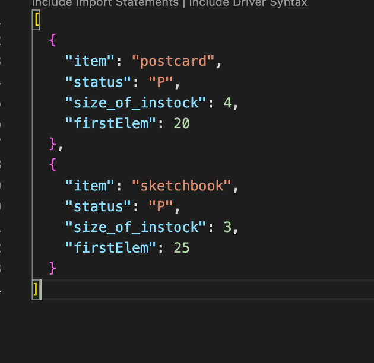
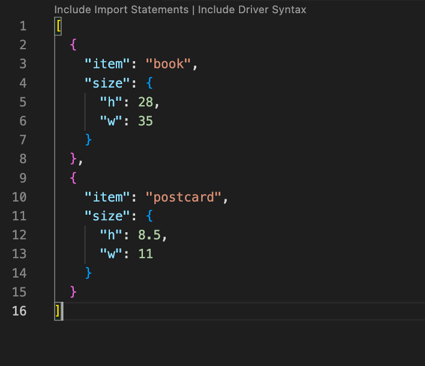
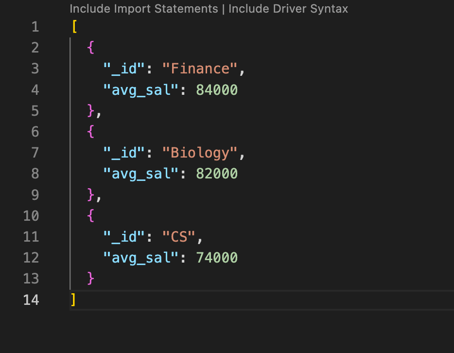
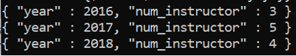
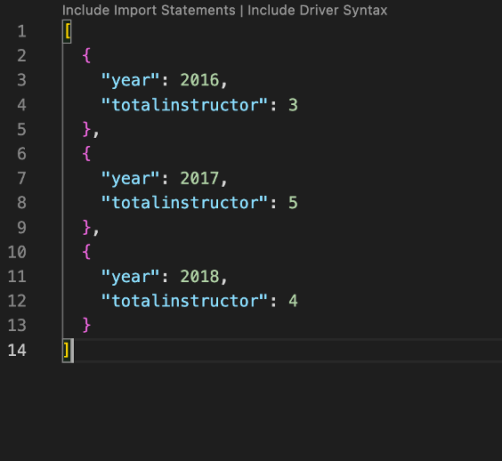
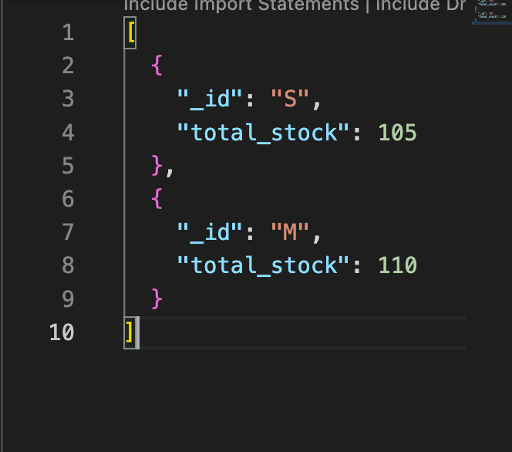
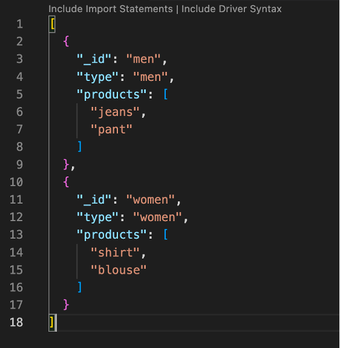

Exercise with Mongo Db using VS Code
Q1 . Populate a products collection using the following command (make sure that no documents exist in the products collection before running the command).
db.products.insertMany( [
{ item: "book", size: { h: 28, w: 35 }, status: "A" , instock: [ { warehouse: "A", qty: 35 }, { warehouse: "B", qty: 30 }, { warehouse: "C", qty: 20 } ] },
{ item: "journal", size: { h: 16, w: 25}, status: "A", instock: [ { warehouse: "C", qty: 15 } ] },
{ item: "mat", size: { h: 19, w: 23 }, status: "P", instock: [ { warehouse: "A", qty: 60 } ] },
{ item: "notebook", size: { h: 8.5, w: 11 }, status: "A", instock: [ { warehouse: "A", qty: 40 }, { warehouse: "B", qty: 5 } ] },
{ item: "postcard", size: { h: 8.5, w: 11 }, status: "P", instock: [ { warehouse: "A", qty: 20 }, { warehouse: "B", qty: 15 }, { warehouse: "C", qty: 35 }, { warehouse: "D", qty: 15 } ] },
{ item: "sketchbook", size: { h: 18.85, w: 30 }, status: "P", instock: [ { warehouse: "A", qty: 25 }, { warehouse: "C", qty: 25 }, { warehouse: "D", qty: 20 } ] }
] );
1. Find the documents in which the instock array has more than two elements and the qty of the first element is less than 30. Display the item and status fields only in the result.
Copy and paste your MongoDB command below
db.products.aggregate(
[
{$project: {item:1, status:1,_id:0,
size_of_instock: {$size: "$instock"},"firstElem": { "$arrayElemAt": [ "$instock.qty", 0 ]}
}
},
{$match: {"size_of_instock": {$gt: 2},"firstElem":{$lt: 30}}}
])
Insert the screenshot of result below

2. Find the documents in which h is greater than 20 or the qty at warehouse C is greater than 30. Display the item and size fields only in the result (you should not use $unwind).
Copy and paste your MongoDB command below
db.products.aggregate(
[{$match: { "$or" : [
{ "size.h" : { "$gt" : 20 } },
{"instock":{$elemMatch : {warehouse:"C",qty: { $gt : 30 }}}}
] }}
, { $project: { _id: 0, item: 1, size:1 } }
])
Insert the screenshot of result below

Q2 . Populate an instructors collection using the following command (make sure that no documents exist in the instructors collection before running the command).
db.instructors.insertMany( [
{
"name": "Zhang",
"dept_name": "CS",
"salary": 68000,
"teaches": [ { course_id: "CS-101", year: 2018 }, { course_id: "CS-347", year: 2018 } ]
},
{
"name": "Levy",
"dept_name": "CS",
"salary": 80000,
"teaches": [ { course_id: "CS-128", year: 2016 }, { course_id: "CS-201", year: 2017 } ]
},
{
"name": "Brandt",
"dept_name": "Finance",
"salary": 90000,
"teaches": [ { course_id: "FIN-201", year: 2016 }, { course_id: "FIN-301", year: 2017 }, { course_id: "FIN-320", year: 2017 } ]
},
{
"name": "Davis",
"dept_name": "Finance",
"salary": 78000,
"teaches": [ { course_id: "FIN-102", year: 2017 }, { course_id: "FIN-200", year: 2018 } ]
},
{
"name": "Crick",
"dept_name": "Biology",
"salary": 92000,
"teaches": [ { course_id: "BIO-101", year: 2017 }, { course_id: "BIO-301", year: 2018 }, { course_id: "BIO-301", year: 2018 } ]
},
{
"name": "Williams",
"dept_name": "Biology",
"salary": 72000,
"teaches": [ { course_id: "BIO-101", year: 2016 }, { course_id: "BIO-201", year: 2017 }, { course_id: "BIO-101", year: 2018 } ]
}
] );
1. Find the average salary of each department and sort the result by the average salary in descending order. The result should display the department name and the average salary of each department.
Copy and paste your MongoDB command below
db.instructors.aggregate(
[
{
$group:
{
_id: "$dept_name",
avg_sal:{$avg:"$salary"} }
},{$sort:{avg_sal:-1}}
]
)
Insert the screenshot of result below

2. Find the number of instructors who taught in each year and sort the result in chronological order. The sample output is as follows. You may check the $addToSet operator.

Copy and paste your MongoDB command below
db.instructors.aggregate( [
{ $unwind: "$teaches" } ,
{ $group: { _id: "$teaches.year",i_name:{$addToSet:"$name"} } },
{$project: {year:"$_id",_id:0,"totalinstructor":{$size:"$i_name"}}},
{$sort: {year:1}}
] )
Insert the screenshot of result below

Q3 . Populate a clothes collection using the following command (make sure that no documents exist in the clothes collection before running the command).
db.clothes.insertMany( [
{ product: "blouse", instock: [ { size: "M", qty: 35 }, { size: "S", qty: 35 } ], type: "women" },
{ product: "hoodie", instock: [{ size: "S", qty: 35 } ], type: "boys" },
{ product: "jacket", instock: [ { size: "M", qty: 40 }, { size: "S", qty: 25 } ], type: "girls" },
{ product: "jeans", instock: [ { size: "L", qty: 50 }, { size: "M", qty: 20 } ], type: "men" },
{ product: "pant", instock: [{ size: "L", qty: 40 } ], type: "men" },
{ product: "shirt", instock: [ { size: "M", qty: 15 }, { size: "S", qty: 10 } ], type: "women" }
] );
1. Find the total qty of each size. Display the size and total qty of the size only if the total qty is greater than 100.
Copy and paste your MongoDB command below
db.clothes.aggregate([
{$unwind:"$instock"},
{$group:{_id:"$instock.size",sumqty:{$sum:"$instock.qty"}}},
{$match: {"sumqty": {$gt: 100}}}
])
Insert the screenshot of result below

2. Find the product(s) of each type and store them/it in a products array for each type. Display the type and products only if the products array contains exactly two elements. The result may look like the following (pay attention to the field name).
